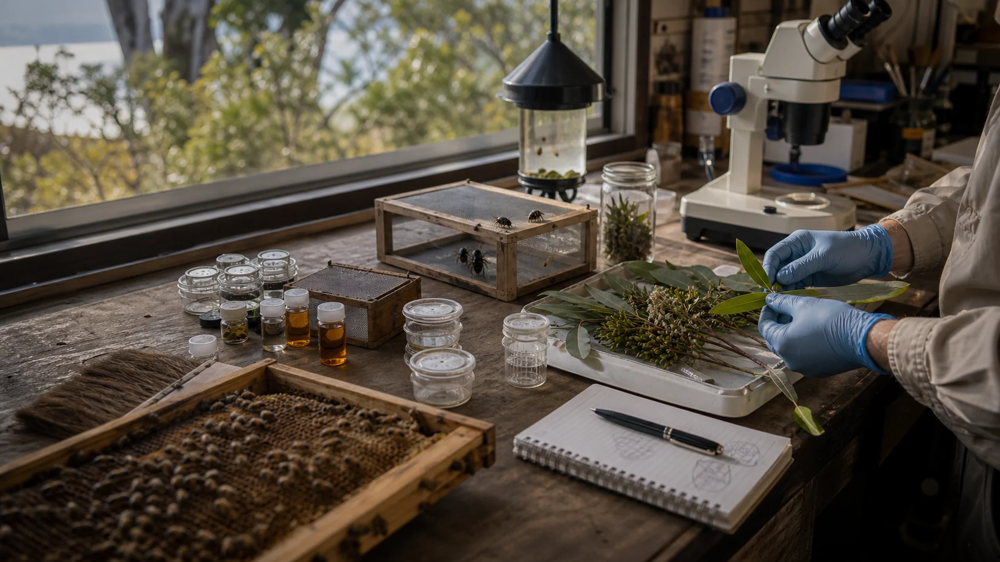

Pest confirmation and surveillance
Monthly mite checks, beetle counts, brood observations, colony stress notes and careful referral for suspicious symptoms.
What is actually present?
A good research program protects bees from hype. Native plant chemistry, beetle traps and mite management ideas should pass safety, residue, legality and delivery gates before anyone talks about hive trials.
Research streams
The lab should not chase a single magic answer. Pest pressure, beekeeper practice and candidate treatments all affect each other.
Monthly mite checks, beetle counts, brood observations, colony stress notes and careful referral for suspicious symptoms.
What is actually present?Bring boards, beetles and brood-frame photos; compare monitoring before and after legal treatments; learn from local practice.
What is working here?Start with lab screens for repellency, mortality, adult bee safety, brood behaviour, residues and delivery systems.
What is safe enough to test next?Plant chemistry without cowboy chemistry
The source material names eucalypt oils, lemon myrtle, tea tree and local Myrtaceae as possible leads. That does not mean they are ready for hives. It means they deserve careful screens under lawful collection, benefit-sharing and permit pathways where those rules apply.
Safety gates
This is the calm line in the sand: an idea can be interesting and still not be ready for bees.
Does the candidate actually repel, attract, trap or kill the target under controlled conditions?
What happens to adult bees at realistic exposure levels, and who reviews the method?
Could the idea disturb brood, queen function, bee behaviour or colony stress?
Could wax, honey, equipment or flavour be affected in a way that makes the idea unusable?
Is this a trap, slow-release material or monitoring aid, and can it be used without messy handling?
Does the trial need APVMA, biodiscovery, ethics, land access or biosecurity approval before field use?
If all earlier gates pass, could a contained pilot answer one narrow question?
Only after permits, safety, residues, data plan, beekeeper consent and partner review are clear.